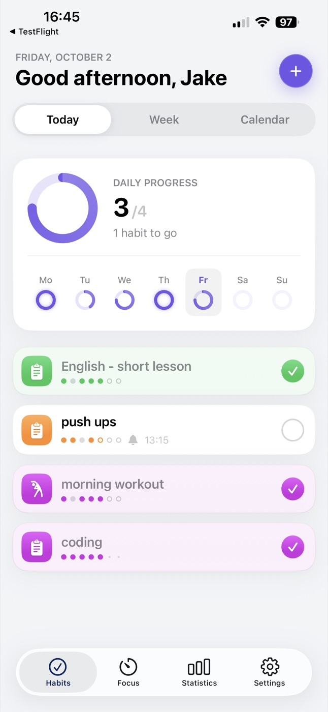
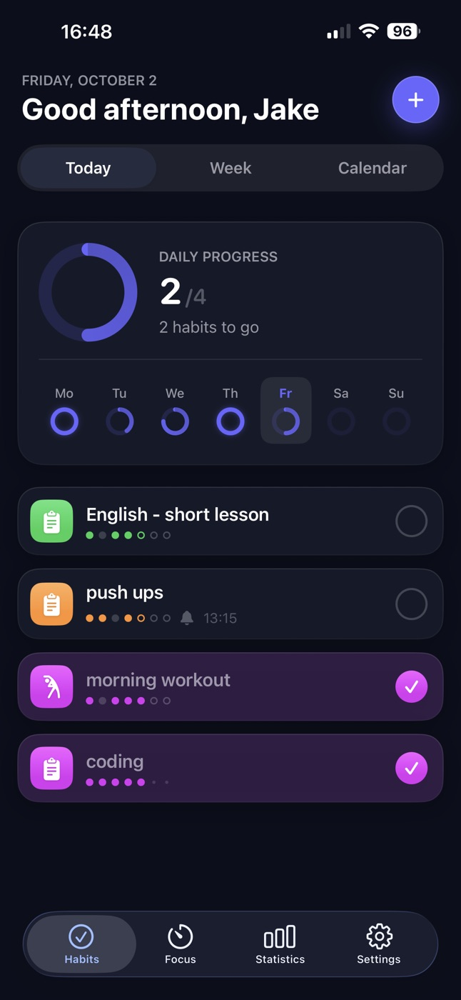

Week by week
Your whole week at a glance
Every habit, every day — what's done, what was skipped and what's still ahead.
Habit tracker & focus timer
HabitsFlow keeps routines light: create a habit in seconds, check it off with a tap, stay on task with a built-in Pomodoro timer and watch your progress add up — on iPhone, iPad and Mac.


Features
Week by week
Every habit, every day — what's done, what was skipped and what's still ahead.
Focus mode
Pick a habit or a task, start a session and let focus time flow into your stats.
Statistics
Week, month and year views with bar and pie charts.
Widgets
Today and This week widgets — no need to open the app.
Appearance
Pick a theme, a background color or a wallpaper.
Schedule & reminders
Choose the exact days for each habit — every day, weekdays or weekends — and get a gentle nudge when it's time.
Private iCloud sync
Habits sync through your own iCloud — no account, no servers, no tracking. The App Store privacy label reads: Data Not Collected.
Screens
iPad & Mac
A layout made for iPad that also runs on Macs with Apple silicon — with the same habits, synced.
What's new
Support
Yes — you can start building habits for free. HabitsFlow Premium unlocks full access and is available as a monthly or yearly subscription, or as a one-time lifetime purchase. Subscriptions can be cancelled anytime in your App Store account settings.
Open the Premium screen in the app and tap Restore. Make sure you're signed in with the same Apple ID you used for the original purchase.
Yes. HabitsFlow syncs through your private iCloud, so your habits follow you across iPhone, iPad and Mac signed in with the same Apple ID. There's no separate account to create.
None. Your habits live on your device and in your own iCloud. There are no tracking servers and no data is sold. Read the full Privacy Policy.
English, French, German, Korean, Polish, Portuguese, Russian, Simplified Chinese, Spanish and Ukrainian.
Send an email with your device model, iOS version and a short description of what happened. A screenshot or screen recording helps a lot. Every message gets read.